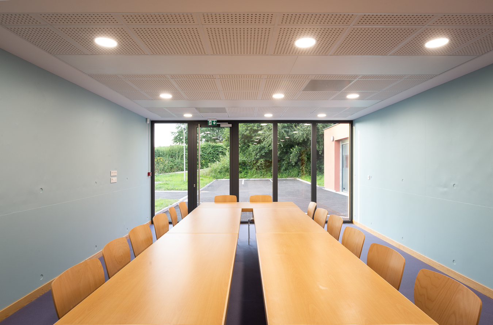
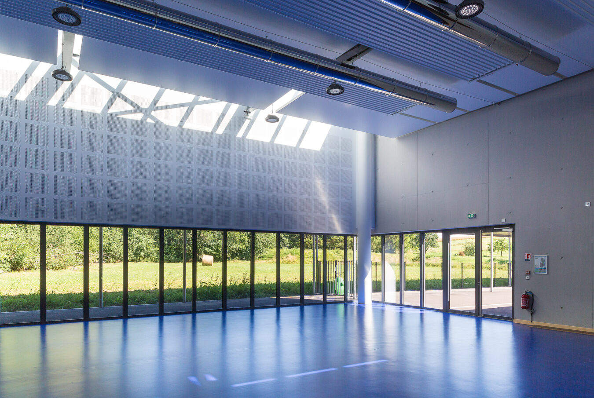
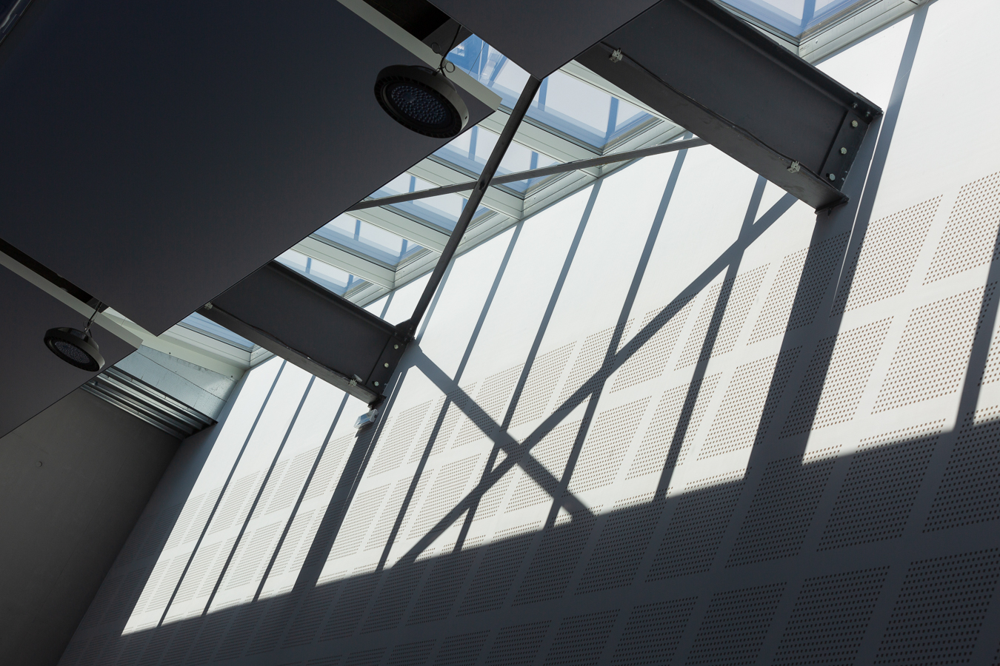
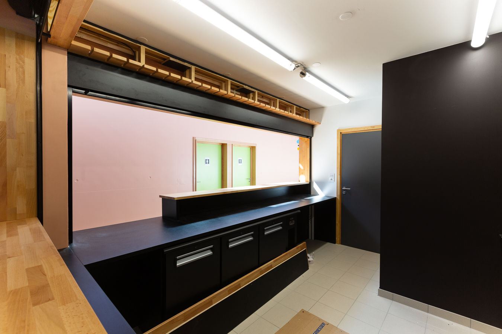
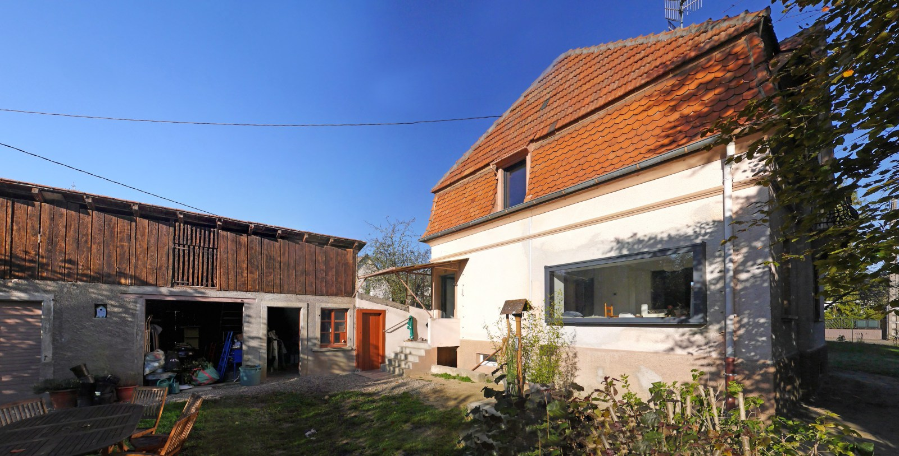
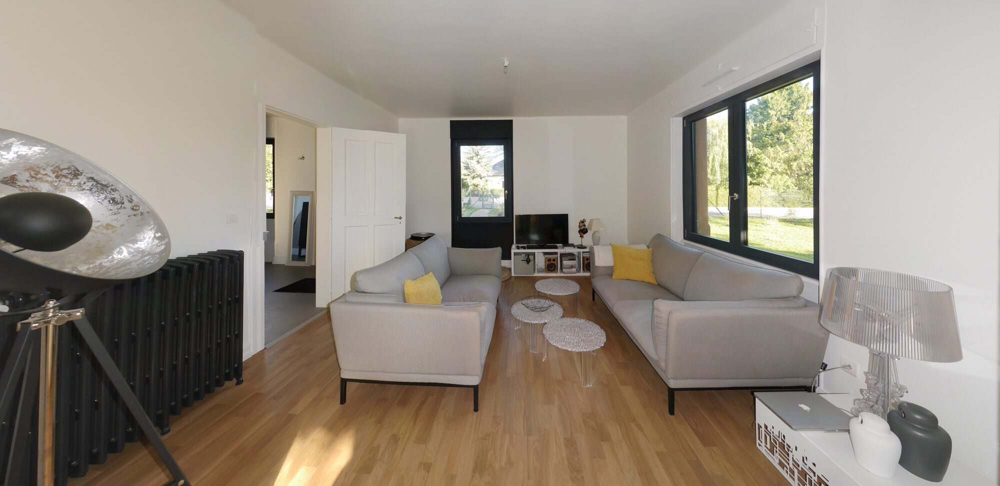
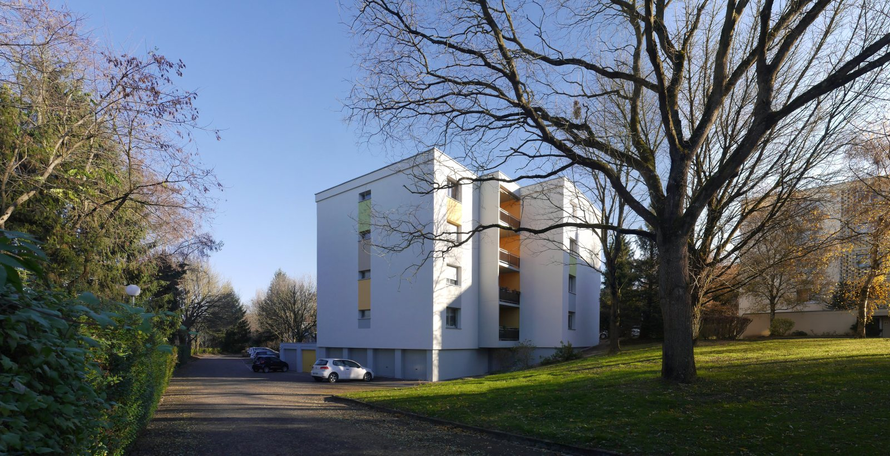
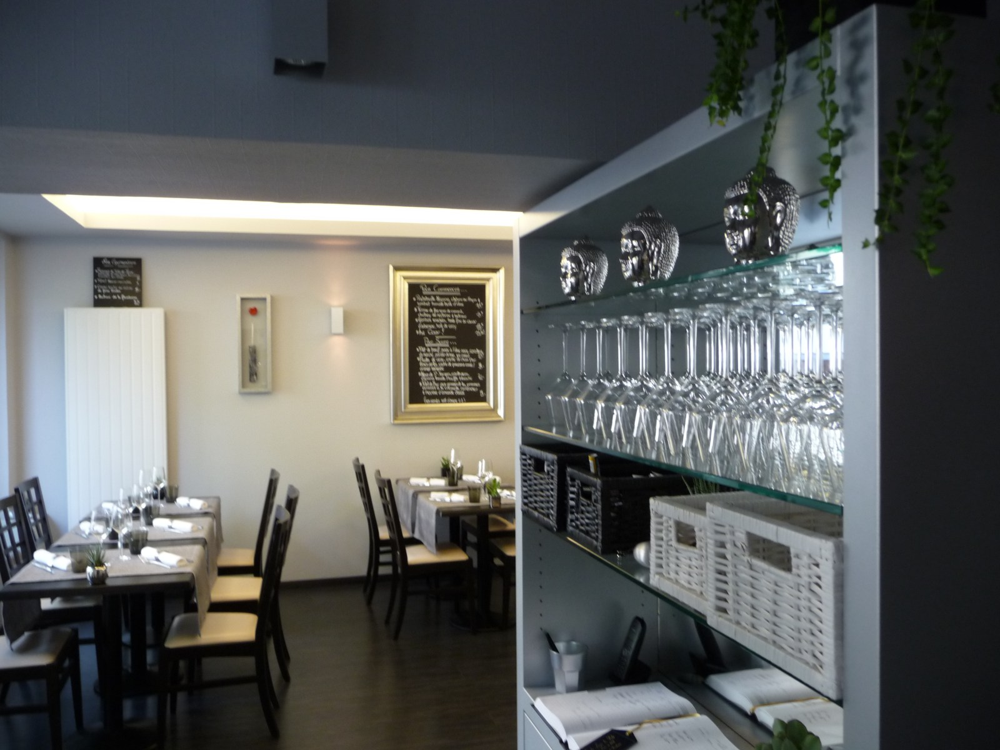
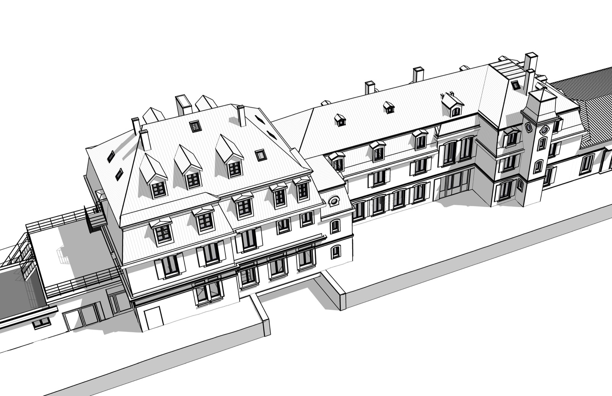

Salle École Péri, Ruederbach
Reportage architectural de jour et en heure bleue — mise en valeur d'un équipement communal livré. Photographies © martin itty ~ piXitty





Une sélection de nos travaux récents — équipements publics, copropriétés, restauration, patrimoine.
Reportage architectural de jour et en heure bleue — mise en valeur d'un équipement communal livré. Photographies © martin itty ~ piXitty




Panoramas stitchés haute résolution — relevé complet intérieur et extérieur.



Relevé d'une copropriété pour dossier technique.


Relevé d'un établissement en activité — approche non intrusive.


Modèle BIM complet d'un site mixte intégrant un bâtiment historique restauré et plusieurs extensions contemporaines. Restitution patrimoniale fidèle issue d'un relevé scan-to-BIM (toitures à la Mansart, lucarnes, alignement des baies), complétée par la modélisation des extensions, passerelles et parc paysager. Modélisation Revit · vues exportées Autodesk Viewer


Un projet similaire en tête ?
Démarrer une conversation